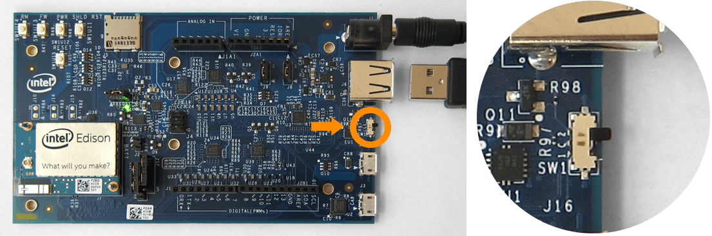

Host mode USB cable
Use the standard-sized USB port in USB host mode to allow the Intel® Edison to accept USB peripherals such as mice, keyboards, etc.

-
Find the microswitch in between the USB ports on the expansion board.
Switch the microswitch up towards the standard-sized USB port, if it isn’t already.
 -
Plug in the DC power supply to the barrel connector since USB host mode requires the use of an external power adapter.

-
Plug a USB peripheral with a standard-sized USB connector into the USB port above the microswitch on the expansion board.